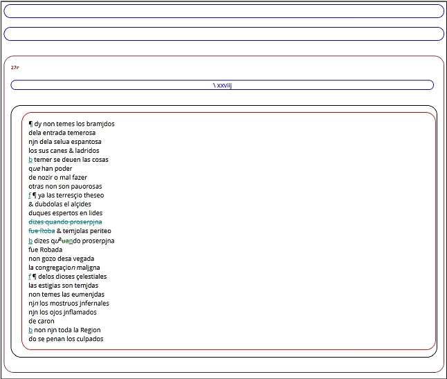
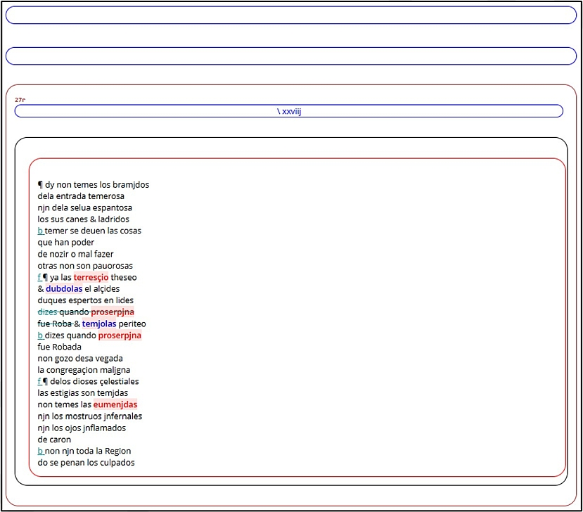
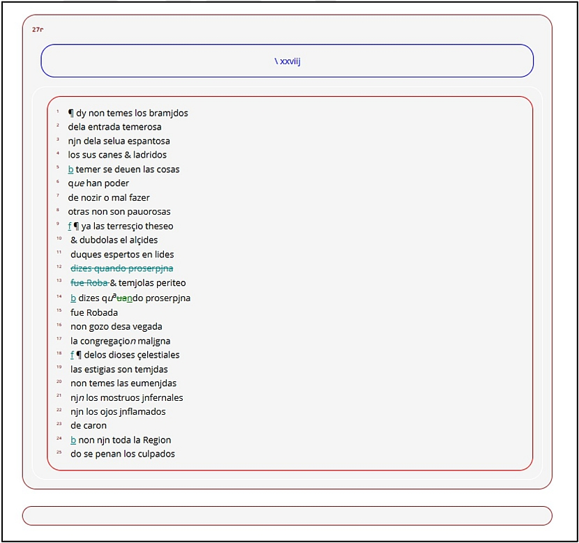

Lematizado y etiquetado morfológico
La funcionalidad principal del Analizador Corpus OSTA es la lematización y etiquetado morfológico de las transcripciones paleográficas. El procesado de cada transcripción genera en la misma carpeta donde se encuentra el texto analizado tres ficheros con estructura XML y extensión .html en formato UTF-8, visibles en un navegador web.
TEXT.SIGLA.html: se resuelven abreviaturas, añadidos y supresiones; se mantiene la disposición del texto en el códice (foliación, columnas, cabeceras, signaturas y reclamos); el texto no ofrece ningún tipo de lematización o etiquetado morfológico.

TEXT.SIGLA.tagged.html: se resuelven abreviaturas, añadidos y supresiones; se mantiene la disposición del texto en el códice (foliación, columnas, cabeceras, signaturas y reclamos); el texto incluye lematización y etiquetado morfológico (visible al pasar el cursor por encima de una palabra); se marcan en rojo las palabras que no aparecen definidas en el diccionario, y en azul las formas analizadas como verbo+clítico.

TEXT.SIGLA.vrt.html: se resuelven abreviaturas, añadidos y supresiones; se mantiene la disposición del texto en el códice (foliación, columnas, cabeceras, signaturas y reclamos); el texto incluye lematización y etiquetado morfológico (visible al pasar el cursor por encima de una palabra) y se añade el número de línea.

En los ficheros TEXT.SIGLA.vrt.html cada línea del original se identifica con la etiqueta \<LN id='1'\>\<LNC\>1\</LNC\>\</LN\> y cada una de las palabras en una línea del original aparece etiquetada con \<w data1='dy•decir•VMM02S0'\>dy\</w\>, siendo el símbolo • el utilizado para separar los tres componentes del lematizado y análisis morfológico:
<FOL>
<folio>27r
<HD> <w data1='•PUNCT•PUNCT'></w>
<w data1='xxviij•28•Z'>xxviij
</HD>
<CB1>
<CB>
<LN id='1'>1
<w data1='¶•¶•Fz'>¶
<w data1='dy•decir•VMM02S0'>dy
<w data1='non•no•RN'>non
<w data1='temes•temer•VMIP2S0'>temes
<w data1='los•el•DA0MP0'>los
<w data1='bramjdos•bramido•NCMP000'>bramjdos
<BR>
El formato de estos ficheros permite su posterior manipulación y procesado con otras herramientas, véase como ejemplo la sección 17 de Cuentapalabras (Fradejas Rueda 2025).